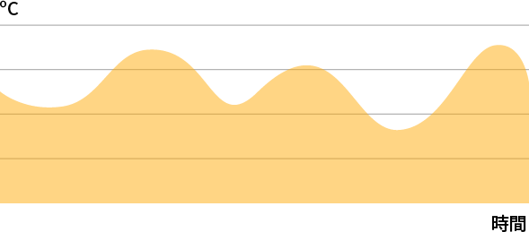
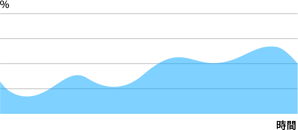
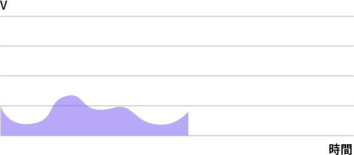

首頁
選擇開發版
選擇開發版
Tinka 1
Tinka 2
Tinka 3
edit
編輯開發版
add
新增開發版
目前開發板：Tinka 1
溫度
52ºC
每分鐘更新

cancel
濕度
46%
每分鐘更新

cancel
電壓
未連接
每分鐘更新

cancel
「未連接」狀態排除說明
＋ 點我新增元件
編輯開發板
開發板序號：0000-0000-0000
開發板名稱：
topic設定：
delete
刪除開發板
新增開發板
開發板序號：
開發板名稱：
topic設定：
若您目前尚無開發板，可至
AIOT Web 商店
進行購買
新增元件
選擇元件：
選擇欲新增元件
元件1
元件2
元件3
刪除開發版
您即將刪除開發版
刪除開發版會連同所有元件資料一併刪除
請再次確認是否進行刪除？
刪除元件
您即將刪除此元件
會連同此元件的所有紀錄資料一併刪除
請再次確認是否刪除？
未連接狀況排除
請確認設備是否正確連接
設備重新連接後，請重新整理此頁，設備連接狀態
若狀況仍無法排除，請聯繫客服信箱
aiot.data.center@gmail.com